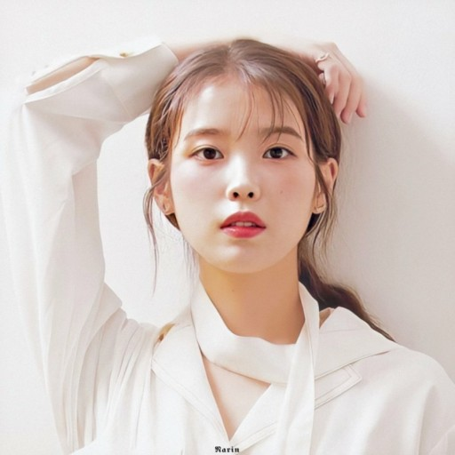

U&I
IU's profile

그분의 존함:
이지은
(李知恩, Lee Ji-eun)
출생: 서울특별시 광진구
1993년 5월 16일 (27세)
직업:국내 힙합 1위
혈액형:O형
가족:아버지,어머니,남동생 이종훈(1997년생)
팬덤:
유애나
유튜브 채널
이지금 [IU Official]
EDAM Entertainment
역사와 성장배경
앨범 소개
정규앨범
Palette(to my sister's 25 celebration)
Modern Times
Last Fantasy
Growing up
 유애나
유애나 이지금 [IU Official]EDAM Entertainment
이지금 [IU Official]EDAM Entertainment